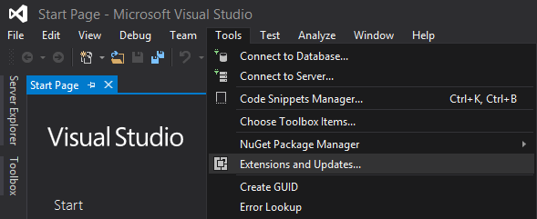

Installing OpenFrameworks
Make sure you have either Visual Studio 2015 or 2013 installed and then navigate to tools->Extensions and Updates. Next click on Online in the extensions list. Search in the finder for openFrameworks and install the plugin.


Creating a new Project
Create a new project and select the openFrameworks template under Templates->Visual C++->openFrameworks. The important thing to note here is to create the project underneath the openFrameworks extension. If you can't find the extension or don't know where to find it (like I did) you can go download the library here and just put it somewhere you'll remember. The location you want to place your application is in the apps/myApps folder in the library. Also, make sure you have the "Create directory for solution" radio button turned OFF.

You'll then be asked what addons you want to put into your package. Right now just choose the ofxGui addon.

Now where rollin'!
Build and Run
After creating the project you'll see that you'll have 3 files already created for you which are: main.cpp, ofApp.cpp, and ofApp.h . If we were run this (using Ctrl + F5) we get an amazing blank screen!

Note, All files are presented using the MIT License